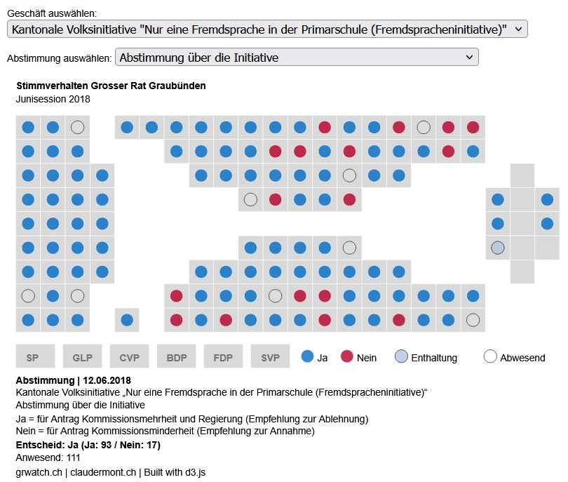
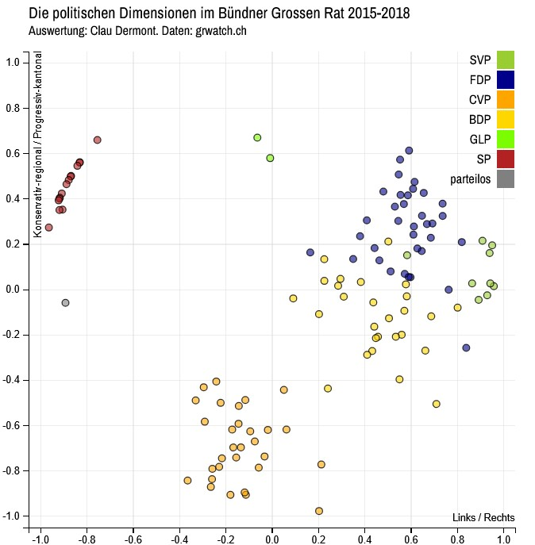
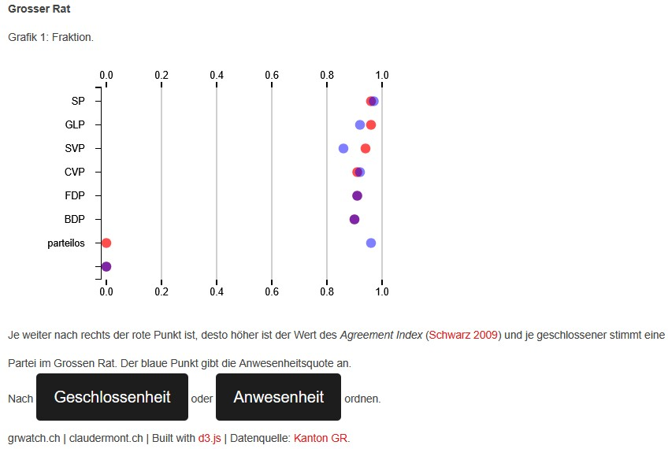

Von 2015 bis 2021 war die Webseite grwatch.ch eine Möglichkeit, um mehr zu erfahren über die Arbeit des Bündner Grossen Rates. Anhand der Abstimmungsdaten, welche seit 2015 vom Kanton Graubünden publiziert werden, kann einerseits das Abstimmungsverhalten der einzelnen Grossratsmitglieder nachvollzogen werden. Andererseits können diese Daten auch genutzt werden, um zusammenfassende Informationen zu berechnen, wie Anwesenheitsquote, Parteiloyalität oder Fraktionsdisziplin.
Das Projekt ist ausgelaufen. Auf Anfrage sind die entsprechenden Daten und Codes verfügbar. Für die Erarbeitung von grwatch.ch wurden einerseits R-Scripts genutzt (Daten runterladen, transformieren, abspeichern) sowie d3.js-Scripte für die Visualisierung der Daten.


